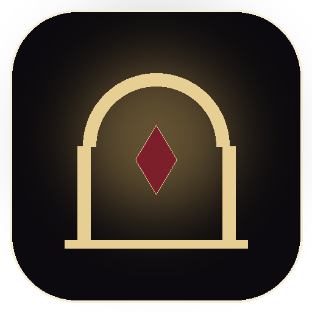
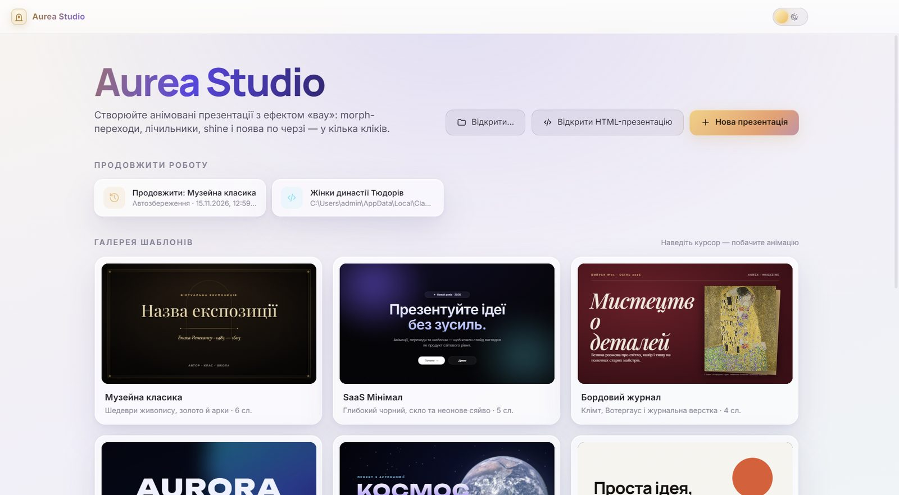

Morph-переходи
Однакові елементи плавно перетікають між слайдами: позиція, розмір, колір. Просто дублюйте слайд і пересуньте.

Aurea Studio ЗавантажитиРедактор слайдів з анімаціями рівня сучасних сайтів: morph-переходи, лічильники, друкарська машинка, живі фони й конфеті. Працює без інтернету.
Версія 1.0.0 · без встановлення · ліцензія MIT
Кожен шаблон уже анімований: просто замініть текст і фото.
Знайомі інструменти професійного редактора — у власному сучасному інтерфейсі.
Однакові елементи плавно перетікають між слайдами: позиція, розмір, колір. Просто дублюйте слайд і пересуньте.
Fade-up з розмиттям, по буквах, друкарська машинка, маркер, глітч, неон, падіння, 3D-нахил, лічильники й ріст діаграм.
Вибір і видимість, групування, блокування, порядок перетягуванням, вирівнювання й розподіл.
Ctrl+K — і просто пишіть, що зробити. Понад 80 гарячих клавіш.
PDF, автономний HTML з усіма анімаціями та експорт у формат .pptx для інших редакторів.
Заливка, контур, тінь, світіння, розмиття, прозорість і точні координати.
Пошук у Wikimedia Commons і Openverse, автор і ліцензія — автоматично в підписі.
Таймер, наступний слайд, нотатки, лазерна указка й перо.
Порцелянова світла та глибока «скляна» темна — одним кліком.
Наведіть курсор на картку — побачите ефект.

Безкоштовно. Без реєстрації. Працює офлайн.
Так. Aurea Studio — безкоштовна програма з відкритою ліцензією MIT.
Так, через експорт у формат .pptx. Текст, фігури, картинки, діаграми, тло й нотатки переносяться; переходи — найближчими стандартними, анімації — простим затуханням. Унікальні ефекти (morph, лічильники, shine, живі фони) не переносяться — для них є експорт в HTML, де зберігається все.
Програма ще не підписана платним сертифікатом. Натисніть «Докладніше» → «Виконати все одно».
Клацніть по програмі правою кнопкою → «Відкрити» → «Відкрити». Це потрібно один раз для непідписаних програм.
Розпакуйте архів і запустіть run.sh. Скрипт install.sh додасть програму в меню. На Chromebook спершу увімкніть «Середовище розробки Linux».
У шаблонах — картини та фото NASA у суспільному надбанні. Вбудований пошук показує лише зображення з вільною ліцензією й сам додає підпис з автором.
Ні. Шрифти, шаблони й бібліотека зображень вбудовані. Інтернет потрібен лише для пошуку нових фото.
Aurea Studio поширюється за ліцензією MIT. Сторонні компоненти: Electron (MIT), PptxGenJS (MIT), JSZip (MIT), шрифти — SIL Open Font License 1.1, зображення в шаблонах — суспільне надбання (Wikimedia Commons, NASA).
Усі назви сторонніх продуктів і торговельні марки належать їхнім власникам. Aurea Studio — незалежний проєкт.